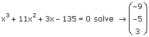
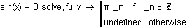
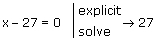

Solving Equations Symbolically |
To solve an equation symbolically, type the equation using the Boolean equals sign ([Ctrl] [=]) and either:
- or -
Then press [Enter].
If the function contains more than one variable, type a comma after "solve," and then type a comma-separated list of the variable(s) you want to solve for in the placeholder.
Mathcad returns symbolic solutions to the equation, if possible. Otherwise, it returns numeric solutions.
Note: If you have previously assigned a numeric value to the variable you are solving for, Mathcad returns an error. To resolve this issue, either clear the variable's value by typing x:= x or use the keyword "explicit," as explained in Solving for a Variable That Has an Assigned Value.
This page covers the following topics:
| Types of Solutions |
If the equation you are trying to solve has more than one solution, Mathcad returns the solutions in a vector, unless the solution is periodic.

To solve an equation whose right-hand side is 0, you only need to type the left-hand side of the equation. For example, you can solve x − 10 = 0 as follows:
x − 10 solve → 10
If the equation contains more than one variable, you must specify the variable you want to solve for after "solve."
x − a + 5 solve,x → a − 5
If your equation includes numbers with decimal points, Mathcad returns a decimal answer.
5x − 4.5 = 0 solve → 0.9
To solve an equation subject to restrictions on the domain of the variable - for example, solving over the real numbers - use the keyword "assume" with "solve."
If an equation has a periodic solution, "solve" returns a single value from the set of solutions. For example:
sin(x) = 0 solve → 0
To see a more detailed solution, add the modifier "fully" after "solve."

Mathcad returns the solution in terms of a new generated variable that represents an arbitrary integer. The generated variable is preceded by an underscore to avoid conflicts with other variables you might have defined elsewhere in the worksheet.
| Solving for a Variable that Has an Assigned Value |
If you have previously assigned a numeric value to the variable you want to solve for, Mathcad returns an error because the variable is not "free." To avoid this problem, either clear the variable's value by typing x:= x, as described in Clearing the Symbolic Value of a Variable, or use the keyword "explicit" to temporarily suppress the assigned value of the variable, as shown in the following example:
x:= 5

If you have assigned an expression to the variable you are solving for, Mathcad substitutes the expression and solves for the specified variable in the expression.
x:= a − b + 7
x + 19 solve,a → b − 26
| Solving a System of Equations |
To solve a system of equations symbolically, use a Solve Block and the Find function with a live symbolic operator. Or you can create a column vector with each element holding one equation in the system, and solve using the live symbolics operator, specifying a column vector or a comma-separated list of system variables after the "solve" keyword.